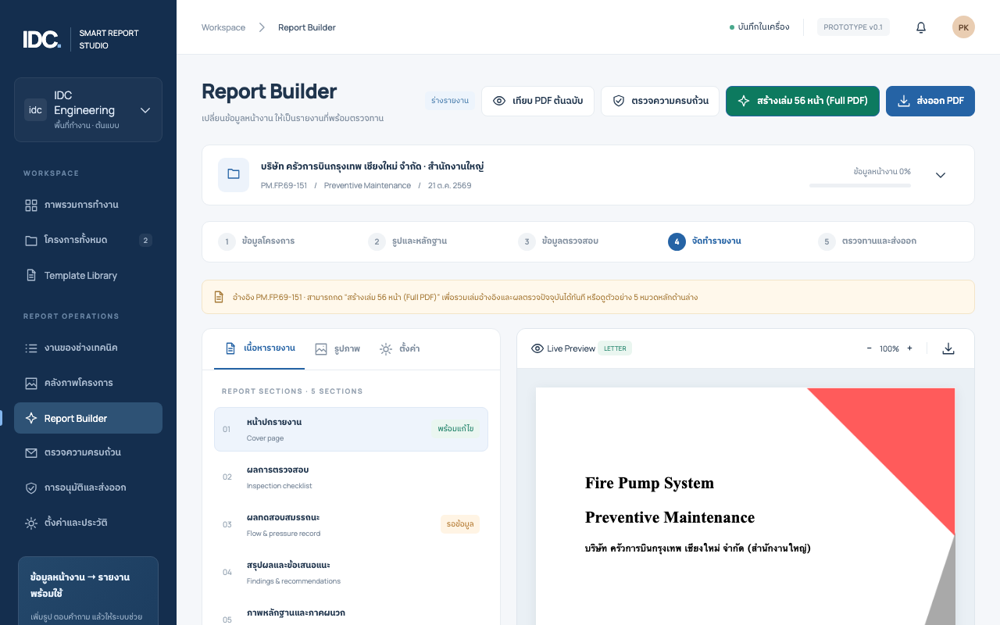
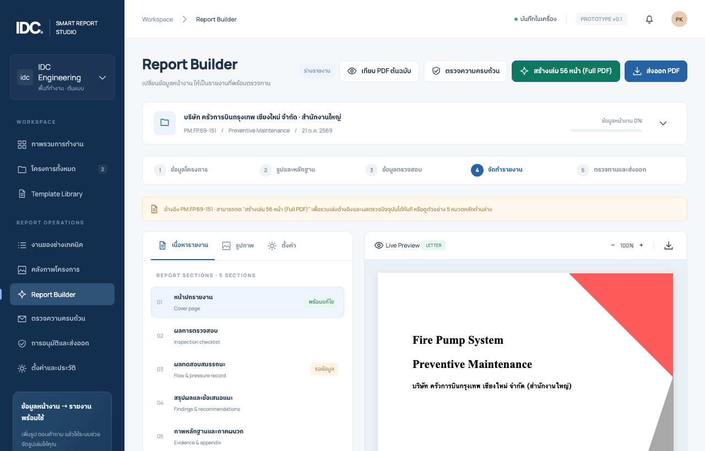

คู่มือการใช้งาน IDC Smart Report Studio
สำหรับช่างเทคนิคหน้างาน ฝ่ายออฟฟิศ และวิศวกรผู้ตรวจสอบ *ปรับปรุงล่าสุด: พฤศจิกายน 2569 • รองรับระบบออนไลน์และสร้างเล่มสมบูรณ์ 56 หน้า*
---
สารบัญหัวข้อ
- ภาพรวมระบบและช่องทางเข้าใช้งาน
- แผนผังขั้นตอนการทำงานจริง (End-to-End Workflow)
- ขั้นตอนที่ 1: การเปิดโครงการและข้อมูลเครื่องจักร
- ขั้นตอนที่ 2: งานตรวจสภาพหน้างาน (Field Checklist)
- ขั้นตอนที่ 3: บันทึกผลทดสอบสมรรถนะ (Flow & Pressure Test)
- ขั้นตอนที่ 4: คลังภาพถ่ายและหลักฐานหน้างาน
- ขั้นตอนที่ 5: การส่งต่องานระหว่างช่างกับออฟฟิศ (Package Transfer)
- ขั้นตอนที่ 6: การตรวจทานและลงนามวิศวกร (Engineering Sign-off)
- ขั้นตอนที่ 7: การสร้างเล่ม 56 หน้าฉบับสมบูรณ์ (Full PDF Assembly)
- โครงสร้างหน้าในเล่มรายงาน 56 หน้า (Template Mapping)
- คำถามที่พบบ่อยและการแก้ปัญหา (FAQ & Troubleshooting)
---
1. ภาพรวมระบบและช่องทางเข้าใช้งาน
IDC Smart Report Studio ออกแบบมาเพื่อเปลี่ยนกระบวนการทำเล่มรายงานตรวจสอบและบำรุงรักษา Fire Pump (ตามมาตรฐาน วสท. และ NFPA 25) จากเดิมที่ต้องจดใส่กระดาษ แล้วนำมาพิมพ์และจัดรูปเล่มใน Microsoft Word ซึ่งใช้เวลาหลายวัน ให้กลายเป็นระบบดิจิทัลที่ทำงานร่วมกันได้อย่างรวดเร็ว
ช่องทางการเข้าใช้งาน
* เข้าใช้งานผ่านเว็บออนไลน์ (แนะนำ): 👉 https://mixzachannel110-lgtm.github.io/smart-report-studio/ *สามารถเปิดผ่าน Safari / Chrome บนมือถือ, แท็บเล็ต iPad หรือคอมพิวเตอร์ได้ทันที มีความปลอดภัยระดับ HTTPS และรองรับการทำงานออฟไลน์ (Offline-ready)*
* เข้าใช้งานแบบ Local Server ในเครื่อง: เปิด Terminal แล้วพิมพ์: ```sh cd "/Users/idc/Desktop/Mix/App template Pakorn/smart-report-studio" npm run dev ``` จากนั้นเปิดเบราว์เซอร์ไปที่: `http://localhost:4173`

---
2. แผนผังขั้นตอนการทำงานจริง (End-to-End Workflow)
ระบบแบ่งบทบาทการทำงานออกเป็น 3 ขั้นตอนหลัก เพื่อความสะดวกรวดเร็วและถูกต้องตามหลักวิศวกรรม:
| ลำดับ | ผู้รับผิดชอบ | สิ่งที่ต้องทำ | ผลลัพธ์ที่ได้ |
|---|---|---|---|
| 1. หน้างาน | ช่างเทคนิค (Technician) | เปิดโครงการ ตอบแบบตรวจ บันทึกค่า Flow 0/100/150% และถ่ายภาพหลักฐาน | ไฟล์แพ็กเกจโครงการ `.json` (รวมรูปถ่ายครบ 100%) |
| 2. ส่งต่องาน | ช่าง ➔ ออฟฟิศ | ส่งไฟล์แพ็กเกจผ่าน LINE, AirDrop หรือ Email | ออฟฟิศนำเข้าไฟล์เข้าเครื่องตนเอง |
| 3. ออฟฟิศ & ตรวจทาน | ทีมธุรการ / วิศวกร | ตรวจความครบถ้วน (QA Check) ระบุชื่อวิศวกรและแนบภาพลายเซ็น | รายงานพร้อมลงนามรับรอง |
| 4. ผลิตเล่มรายงาน | ระบบอัตโนมัติ (PDF-Lib) | กดปุ่ม "สร้างเล่ม 56 หน้า (Full PDF)" | ไฟล์ PDF 56 หน้าสมบูรณ์พร้อมส่งมอบลูกค้า |
---
3. ขั้นตอนที่ 1: การเปิดโครงการและข้อมูลเครื่องจักร
- คลิกเมนู โครงการทั้งหมด (Projects) จากแถบเมนูด้านซ้าย แล้วกดปุ่ม + สร้างโครงการใหม่
- กรอกรายละเอียดที่สำคัญ:
- ในหน้า ลูกค้าและอุปกรณ์ (Assets) ให้ระบุ:
- ชื่อลูกค้า: เช่น `บริษัท ครัวการบินกรุงเทพ เชียงใหม่ จำกัด` - สถานที่ / สาขา: เช่น `สำนักงานใหญ่ ท่าอากาศยานเชียงใหม่` - เลขที่รายงาน: เช่น `PM.FP.69-151` - วันที่ตรวจ: ระบุวันที่ทำการตรวจสอบจริง - เทมเพลต: เลือกระหว่าง `PM-FP-001 (Preventive Maintenance 56 หน้า)` หรือ `PT-FP-001 (Performance Test 44 หน้า)`
- ข้อมูลเครื่องยนต์และปั๊ม: เช่น `CLARKE JU4HNL24 / PENTAIR 5X6X110` - Serial Number ของเครื่องสูบน้ำดับเพลิง (จำเป็นสำหรับการตรวจ QA) - อัตราการไหลที่กำหนด (Rated Flow): ค่ามาตรฐานคือ `750 GPM` - แรงดันที่กำหนด (Rated Pressure): ค่า Nameplate เช่น `109 PSI`
---
4. ขั้นตอนที่ 2: งานตรวจสภาพหน้างาน (Field Checklist)
เปิดเมนู แบบตรวจสอบหน้างาน (Checklist) เพื่อบันทึกผลการตรวจสภาพห้องเครื่องและเครื่องสูบน้ำ:

สัญลักษณ์และการเลือกคำตอบ:
* Y (ปกติ / Yes): อุปกรณ์อยู่ในสภาพสมบูรณ์ พร้อมใช้งาน * N (ผิดปกติ / No): อุปกรณ์ชำรุด มีรอยรั่ว หรือไม่พร้อมใช้ (ระบบจะบังคับให้พิมพ์รายละเอียดในช่องหมายเหตุทันที) * None (ไม่เกี่ยวข้อง): ไม่มีอุปกรณ์ดังกล่าวติดตั้งในระบบ * ไม่ได้ตรวจ: ในกรณีที่ไม่สามารถเข้าตรวจสอบได้
> [!IMPORTANT] > ระบบจะไม่มีการตั้งค่าเริ่มต้นเป็น "ปกติ" เพื่อให้มั่นใจว่าช่างได้เดินตรวจเช็กอุปกรณ์ทุกจุดตามสภาพจริง
---
5. ขั้นตอนที่ 3: บันทึกผลทดสอบสมรรถนะ (Flow & Pressure Test)
เปิดเมนู ผลทดสอบสมรรถนะ (Tests) เพื่อบันทึกค่าที่ได้จากการรันเครื่องสูบน้ำดับเพลิง:

จุดทดสอบมาตรฐาน 3 จุด:
- 0% (Churn / Shutoff): ปั๊มทำงานโดยปิดวาล์วด้านส่ง (Flow = 0 GPM) บันทึกค่าแรงดัน Discharge และ Suction
- 100% (Rated Flow): ปั๊มทำงานที่อัตราการไหล 100% (เช่น 750 GPM)
- 150% (Peak Flow): ปั๊มทำงานที่ 150% (เช่น 1,125 GPM)
กรณีที่ไม่สามารถทดสอบจุด 150% ได้:
* ให้เปลี่ยนสถานะจาก `ทดสอบแล้ว` เป็น `ไม่ได้ทดสอบ (NOT_TESTED)` * ช่องตัวเลขจะถูกเว้นว่าง และระบบจะบังคับให้พิมพ์ เหตุผลที่ไม่สามารถทดสอบได้ (เช่น *ระบบท่อระบายน้ำทิ้งของอาคารไม่สามารถรองรับอัตราการไหลเกิน 1,000 GPM ได้*) * กราฟจะวาดเฉพาะจุดที่วัดได้จริง และไม่ลากเส้นเชื่อมผ่านจุดที่ขาด
---
6. ขั้นตอนที่ 4: คลังภาพถ่ายและหลักฐานหน้างาน
- เปิดเมนู คลังภาพโครงการ (Photos) แล้วกดปุ่ม เพิ่มรูปภาพ
- เลือกภาพถ่ายจากมือถือหรือคอมพิวเตอร์ (รองรับไฟล์ JPG, PNG, WebP ขนาดไม่เกิน 15 MB)
- ระบบจะทำการสแกนค่า SHA-256 อัตโนมัติ หากเลือกรูปซ้ำระบบจะข้ามให้ทันที
- จัดหมวดหมู่ภาพถ่ายให้ตรงจุด:
- พิมพ์คำบรรยายภาพ (Caption) ใต้แต่ละรูป เช่น *"เกจวัดแรงดันด้านส่งขณะทดสอบ 100% ที่ 105 PSI"*
- `Fire Pump` (เครื่องสูบน้ำดับเพลิงหลัก) - `Jockey Pump` (ปั๊มรักษาแรงดัน) - `Controller` (ตู้ควบคุม) - `Pressure Gauge` (เกจวัดแรงดันขณะทดสอบ) - `Maintenance` (การเปลี่ยนถ่ายน้ำมัน/ไส้กรอง) - `Defect` (ภาพจุดชำรุดหรือข้อบกพร่องที่พบ)
---
7. ขั้นตอนที่ 5: การส่งต่องานระหว่างช่างกับออฟฟิศ (Package Transfer)
เนื่องจากระบบเน้นความปลอดภัยและสามารถทำงานได้โดยไม่ต้องพึ่งพาเซิร์ฟเวอร์ฐานข้อมูลราคาแพง ช่างสามารถส่งต่องานให้ออฟฟิศได้ผ่านระบบ แพ็กเกจโครงการฉบับสมบูรณ์:

ฝั่งช่างหน้างาน (เมื่อตรวจเสร็จ):
- เปิดเมนู ตั้งค่าและประวัติ (Settings)
- กดปุ่มสีน้ำเงิน "ส่งออกแพ็กเกจ (+รูปภาพ)"
- ระบบจะทำการรวมข้อมูลโครงการ ตารางตรวจ และแปลงไฟล์รูปภาพทั้งหมดลงในไฟล์ `.json` ไฟล์เดียว (เช่น `PM.FP.69-151-complete-package.json`)
- ส่งไฟล์นี้ให้ออฟฟิศผ่าน LINE, AirDrop หรือ Email
ฝั่งออฟฟิศ (เมื่อได้รับไฟล์):
- เปิดเว็บไซต์บนคอมพิวเตอร์: https://mixzachannel110-lgtm.github.io/smart-report-studio/
- ไปที่เมนู ตั้งค่าและประวัติ (Settings)
- กดปุ่ม "นำเข้าแพ็กเกจ (+รูปภาพ)" แล้วเลือกไฟล์ที่ช่างส่งมา
- ข้อมูลโครงการ ผลทดสอบ และรูปถ่ายทั้งหมดจะถูกโหลดเข้าสู่เครื่องออฟฟิศทันที 100%
---
8. ขั้นตอนที่ 6: การตรวจทานและลงนามวิศวกร (Engineering Sign-off)
เปิดเมนู การอนุมัติและส่งออก (Approval / Review) เพื่อให้วิศวกรตรวจสอบความถูกต้อง:

- ตรวจสอบความครบถ้วน (QA Check): หากมีช่องที่ลืมกรอก หรือมีข้อบกพร่องที่ยังไม่ได้ระบุรายละเอียด จะมีแถบเตือนสีส้มแจ้งให้แก้ไข
- ระบุข้อมูลวิศวกรผู้รับรอง:
- แนบภาพลายเซ็น:
- ชื่อ-นามสกุล วิศวกร: เช่น `นาย พงศกร วิศวกรรมกุล` - เลขที่ใบอนุญาต กว.: เช่น `วศ.บ. เครื่องกล ภย. 48291`
- กดปุ่ม "แนบภาพลายเซ็น" เลือกไฟล์ภาพลายมือชื่อ (PNG พื้นหลังใส หรือ JPG) - เมื่อแนบแล้วจะขึ้นป้ายสีเขียว `มีลายเซ็นแล้ว`
---
9. ขั้นตอนที่ 7: การสร้างเล่ม 56 หน้าฉบับสมบูรณ์ (Full PDF Assembly)
เมื่อตรวจสอบข้อมูลเรียบร้อยแล้ว ท่านสามารถสร้างเล่มรายงานได้ 2 รูปแบบ:

วิธีที่ 1: สร้างเล่มสมบูรณ์ 56 หน้า (Full PDF เล่มจริงสำหรับส่งมอบลูกค้า)
* กดปุ่มสีเขียว `[ สร้างเล่ม 56 หน้า (Full PDF) ]` * ระบบจะนำเอา Master Template 56 หน้าเดิมของบริษัท (รวมหน้ากฎหมาย, แผนผัง, และใบ Calibration ทั้ง 19 หน้า) มาประกอบเข้ากับข้อมูลใหม่: - สลักชื่อลูกค้าและรหัสงานลงบนหน้าปกเดิม - สลักวันที่ตรวจลงบนหน้าชื่อเรื่อง - สลักชื่อวิศวกรและประทับภาพลายเซ็นลงบนหน้าหนังสือรับรอง (หน้า 53) * ระบบจะทำการดาวน์โหลดไฟล์ PDF ขนาดประมาณ 4.2 MB ที่สมบูรณ์ครบ 56 หน้าให้ทันที!
วิธีที่ 2: พิมพ์รายงานฉบับร่าง 5 หมวดหลัก (Draft Print)
* กดปุ่ม "ส่งออก PDF" (หรือไอคอนเครื่องพิมพ์) * ระบบจะแสดงตัวอย่างการพิมพ์ของเบราว์เซอร์ (Chrome Print Preview) สำหรับเอกสารสรุป 5 หมวดหลัก
---
10. โครงสร้างหน้าในเล่มรายงาน 56 หน้า (Template Mapping)
รายงานฉบับสมบูรณ์ตามเทมเพลตมาตรฐานของ หจก. ปกรณ์ เทคนิคอล ซัพพลาย (`PM.FP.69-151`) มีการจัดเรียงหน้าดังนี้:
| หน้า | หมวดหมู่ | เนื้อหา | การประมวลผลของระบบ |
|---|---|---|---|
| 1 | หน้าปก | กราฟิกแดง-เทา Pakorn พร้อมชื่อโครงการและรหัสงาน | ดึงจากข้อมูลโครงการ สลักทับแม่แบบเดิม |
| 2 | ปกใน | ชื่อรายงาน วันที่ทดสอบ และสถานที่ | สลักวันที่และชื่อลูกค้า |
| 3 | สารบัญ | สารบัญ 4 หมวดหลัก | แม่แบบคงเดิม |
| 4–6 | ข้อมูลทั่วไป | ข้อมูลโครงการ ข้อมูลสถานประกอบการ สเปกเครื่องสูบน้ำ | รายละเอียดอุปกรณ์ |
| 7–15 | หมวดที่ 1–2 | ผลการตรวจสอบห้องเครื่อง ตู้คอนโทรล ท่อและวาล์ว | ข้อมูลจากแบบตรวจและรูปภาพ |
| 16–20 | เอกสารอ้างอิง | กฎกระทรวง, มาตรฐาน วสท./NFPA 25, แผนผัง Flowchart | แม่แบบคงเดิมระดับมาตรฐาน |
| 21–39 | ภาคผนวก 1 | ใบรับรองการสอบเทียบเครื่องมือวัด (Calibration Certificates ทั้ง 19 หน้า) | รวมให้อัตโนมัติจาก Master Template |
| 40–42 | หลักฐานงานตรวจ | ภาพประกอบการตรวจสอบและบำรุงรักษา | รูปภาพจากคลังภาพ |
| 43 | ผลทดสอบ Flow | ตารางหลักฐาน Flow 0/100/150% (Letter แนวนอน Landscape) | รักษาสัดส่วนแนวนอนคมชัด |
| 44–46 | ผลประเมิน | Flow and Pressure Record และกราฟ Pump Curve | ผลทดสอบสมรรถนะ |
| 47–52 | ข้อเสนอแนะ | สรุปผล ข้อบกพร่อง และข้อควรปฏิบัติ | สรุปผลจากแบบตรวจ |
| 53 | หน้ารับรอง | หนังสือรับรองของผู้ประกอบวิชาชีพวิศวกรรมควบคุม | สลักชื่อวิศวกร เลข กว. และลายเซ็น |
| 54–55 | เอกสารแนบ | สำเนาใบอนุญาตประกอบวิชาชีพวิศวกร | แม่แบบคงเดิม |
| 56 | ปกหลัง | ข้อมูลบริษัท ช่องทางการติดต่อ | แม่แบบคงเดิม |
---
11. คำถามที่พบบ่อยและการแก้ปัญหา (FAQ & Troubleshooting)
ถาม: ข้อมูลจะหายหรือไม่ถ้าปิดหน้าเว็บเบราว์เซอร์ไป?
* ตอบ: ไม่หายครับ ระบบบันทึกข้อมูลฟอร์มลงใน `localStorage` และรูปภาพลงใน `IndexedDB` ของเบราว์เซอร์ตลอดเวลาที่กรอกข้อมูล อย่างไรก็ตาม ขอแนะนำให้กดปุ่ม "ส่งออกแพ็กเกจ (+รูปภาพ)" เก็บไว้เป็นไฟล์สำรองเมื่องานเสร็จสิ้น
ถาม: ทำไมรูปภาพจากโทรศัพท์มือถืออัปโหลดไม่ขึ้น?
* ตอบ: หากถ่ายภาพจาก iPhone ในรูปแบบ `.HEIC` เบราว์เซอร์บางรุ่นอาจไม่รองรับ ให้ตั้งค่ากล้องใน iPhone เป็น *Most Compatible (JPEG)* หรือแปลงเป็น JPG/PNG ก่อนอัปโหลด โดยไฟล์ต้องมีขนาดไม่เกิน 15 MB ต่อภาพ
ถาม: ต้องการล้างข้อมูลตัวอย่างเพื่อเริ่มงานใหม่ทั้งหมด ทำอย่างไร?
* ตอบ: ให้กดเมนู โครงการทั้งหมด ➔ เลือกโครงการเดิม ➔ กดปุ่ม "สร้างจากงานเดิม" ระบบจะนำเฉพาะข้อมูลสเปกเครื่องจักรมาใช้ แล้วล้างตารางตรวจ ผลทดสอบ และรูปถ่ายทั้งหมดให้กลายเป็นงานใหม่ที่ว่างเปล่าทันที
--- *จัดทำและพัฒนาโดยทีมวิศวกรรม IDC ร่วมกับ หจก. ปกรณ์ เทคนิคอล ซัพพลาย*